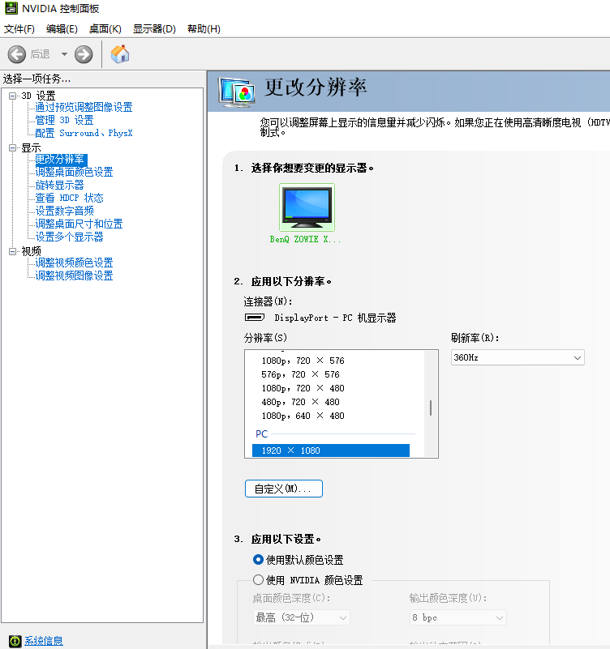
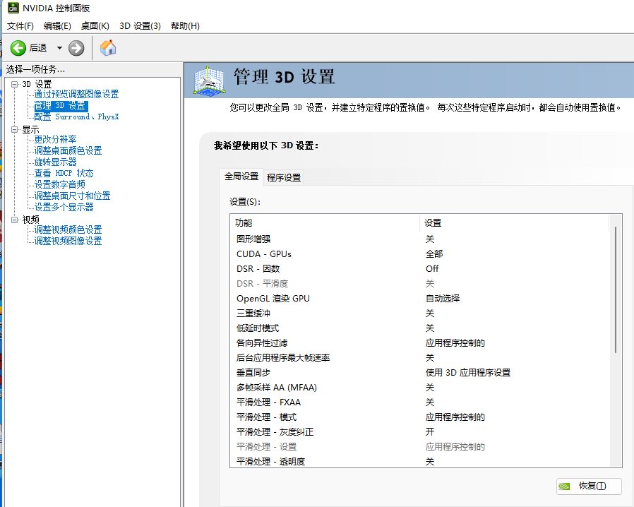
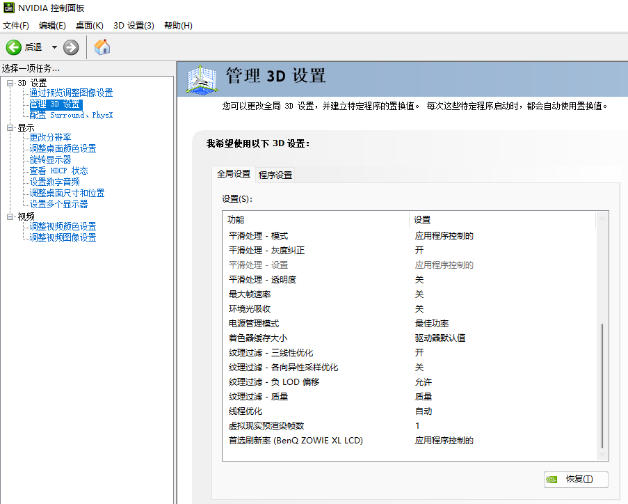
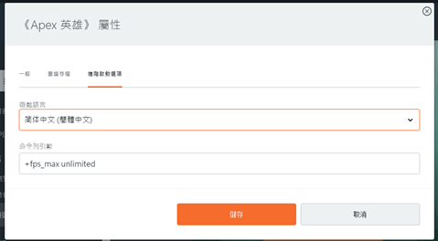
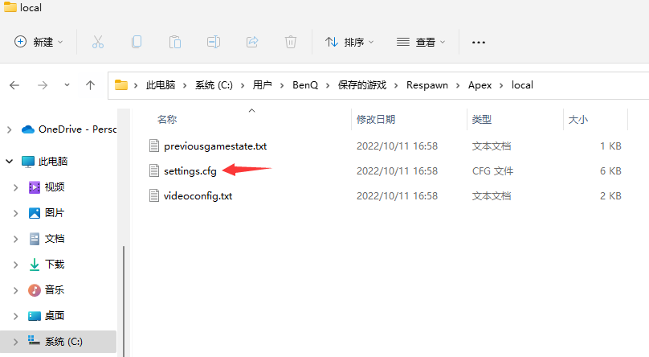
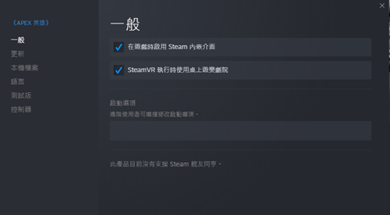
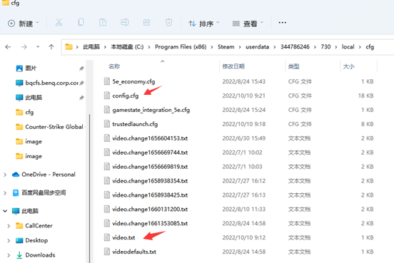

1、LOL 在全屏幕模式下会自动切换为 240Hz (游戏不支持)， 须调整为无边框窗口模式才可以支持 360Hz。
2、APEX/CS:GO 可以在全屏幕/无边框窗口模式下支持 360 Hz，故问题应该是发生在游戏配置或游戏本身：
请客户检查是否使用 -freq 240或-refresh 240启动项，如有使用请将代码后参数改为360或将代码删除；
如未使用任何启动项，那可能是游戏本身无法正确的通过DirectX API获取到正确的配置信息，请客户重装游戏；
如上述措施未能解决问题还请收集如下信息，
1、客户使用 PC 配置/操作系统信息。
2、若使用 NVIDIA 显卡，提供分辨率设定及 3D 页面设定的截图。
  3、游戏配置及本地配置文件
APEX :是通过 Origin 还是 Steam 启动，是否有设置启动选项? (如果有，设定了什么?) 游戏内分辨率设定为何? 是否有自行修改过 APEX config 档案文件? (如果有，更改了什么?) (文件位置: C:\Users\用户名称\Saved Games\Respawn\Apex\local)
 CSGO是否使用启动选项？游戏内分辨率设定为何? 是否有自行修改过 csgo config 档案文件?（config.cfg 和 video.txt）(文件位置: ..\Steam\userdata\***(9位数字)\730\local\cfg )
 